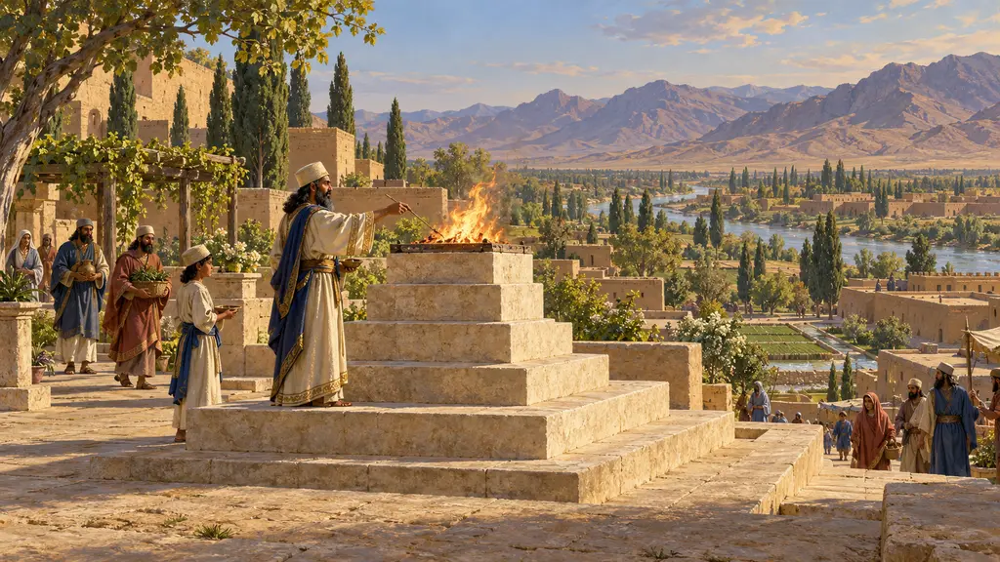
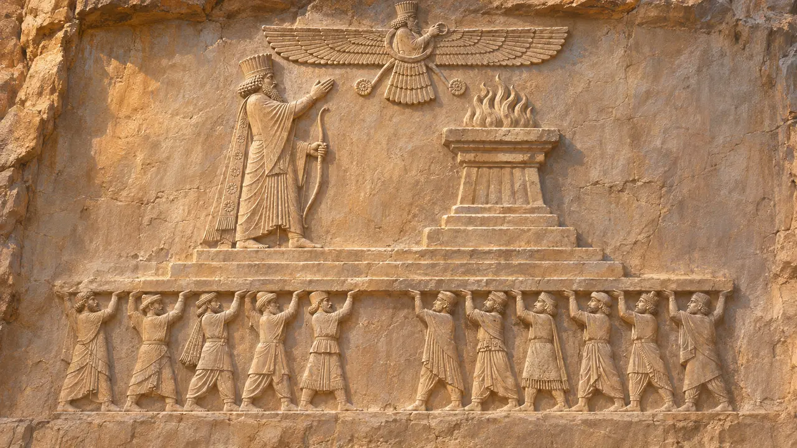
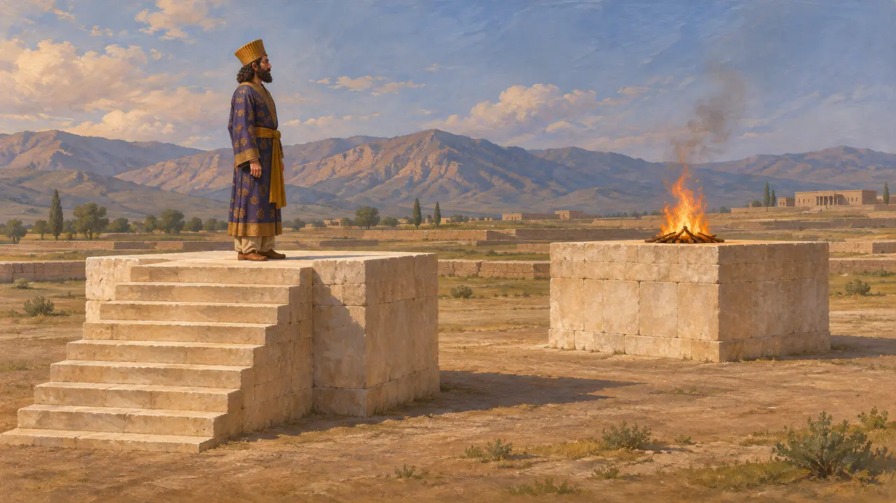
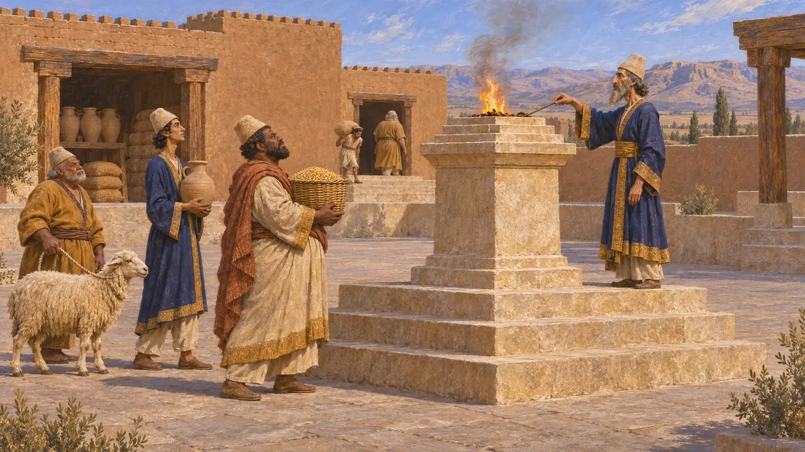
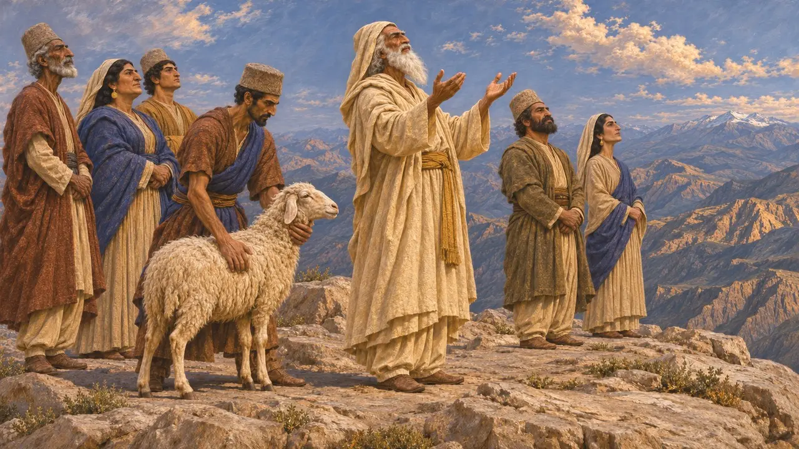
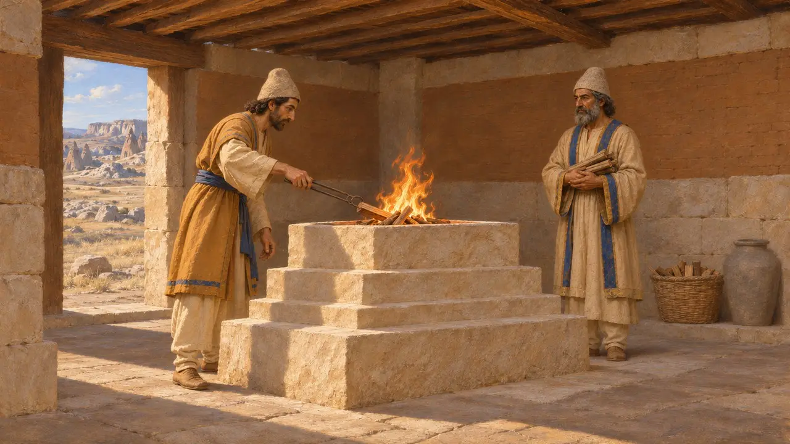

Алтарь огня
Ступенчатый каменный постамент для огня под открытым небом в персидском царском культе, Персида, около 530–479 гг. до н. э.
Алтарь огня представлял собой каменную подставку со ступенчатым верхом и основанием, на которой под открытым небом горел огонь. Лучшее свидетельство о нём — рельеф на гробнице Дария в Накше-Рустам, где Царь поднимает руку перед таким алтарём. Вместе с табличками из Персеполя этот рельеф показывает, что огонь занимал важное место в персидском культе, хотя греческие авторы описывали этот культ совсем иначе.
В игре: Игра показывает ступенчатый каменный алтарь с огнём под открытым небом по образцу рельефа Накше-Рустама. Его размещение на священном участке Пасаргад — упрощение: найденные там каменные блоки, возможно, вовсе не алтари.

Алтарь на царских гробницах
Свидетельства эпохиВ верхнем ярусе высеченной в скале гробницы Дария, рядом с надписью DNa, Царь стоит на трёхступенчатом помосте с луком в руке и поднимает правую руку к ступенчатому алтарю, увенчанному пламенем. Над ним парит крылатая фигура, в которой обычно видят Ахурамазду. Тронный помост покоится на поднятых руках фигур, олицетворяющих подвластные народы. Та же сцена повторяется на более поздних царских гробницах в Накше-Рустаме и Персеполе.
DNa tomb relief; E. F. Schmidt, Persepolis III, 1970

Каменные постаменты в Пасаргадах
СпорныйК северо-западу от дворцов Пасаргад лежит открытая площадка с двумя известняковыми постаментами; на один из них ведёт лестница. Дэвид Стронах предположил, что Царь стоял на постаменте со ступенями, а на другом горел огонь, — это согласуется с рельефами гробниц. Однако сами постаменты не дают прямых свидетельств огня, и другие учёные не столь уверены в их назначении. Датировка соседних террас также остаётся спорной.
D. Stronach, Pasargadae, 1978

Огонь в табличках Персеполя
Свидетельства эпохиТаблички Персепольского крепостного архива, относящиеся примерно к 509–493 годам до н. э., фиксируют выдачу из царских запасов зерна, вина и скота для приношений как иранским, так и эламским богам. Некоторые получатели носят титул haturmakša — вероятно, так называли служителя, следившего за огнём. На оттисках печатей на этих табличках также изображены фигуры, стоящие перед алтарями. Тексты описывают регулярный культ на государственном обеспечении, а не единую унифицированную религию.
W. Henkelman, The Other Gods Who Are, 2008

Геродот и персы, не знающие алтарей
Античное свидетельствоГеродот пишет, что персы не ставили ни статуй, ни храмов, ни алтарей. Он добавляет, что они приносили жертвы на высочайших горных вершинах небу, солнцу, луне, земле, огню, воде и ветрам, без алтаря и без зажжённого огня, пока маг пел гимн. Рельефы ясно изображают царский алтарь с огнём, так что его картина не может быть полной. Некоторые историки полагают, что он имел в виду лишь то, что жертву не сжигали: в другом месте он говорит, что персы почитали огонь богом.
Herodotus 1.131-132; 3.16

Поздние греческие рассказы о поклонении огню
Античное свидетельствоСтрабон, писавший примерно пятью веками позже, сообщает, что персы приносили жертвы прежде всего огню и воде и остерегались осквернить огонь. Он описывает магов, поддерживающих неугасимый огонь в закрытых святилищах, которые он видел в Каппадокии. Это обычай его собственного времени, и переносить его на царствование Дария следует с осторожностью.
Strabo, Geography 15.3
Источники
- DNa tomb relief, Naqsh-e Rostam
- Herodotus 1.131-132; 3.16
- D. Stronach, Pasargadae, 1978
- W. Henkelman, The Other Gods Who Are, 2008
- E. F. Schmidt, Persepolis III, 1970
- P. Briant, From Cyrus to Alexander, 2002